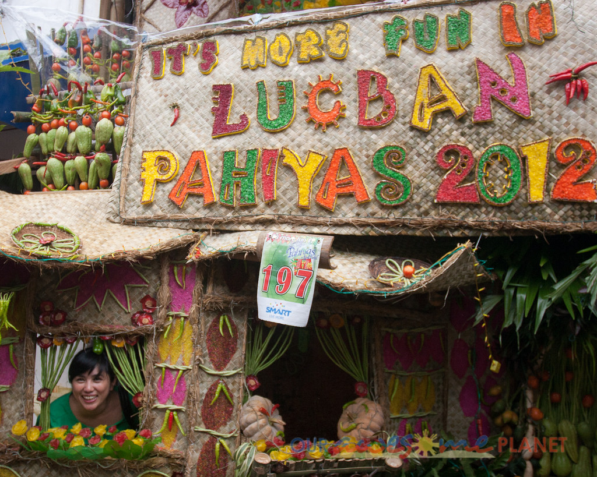

There are three major islands in the Philippines. Luzon, Visayas and Mindanao. Luzon is the largest and most populous island in the Philippines. It is the economic and political center of the nation, being home to the country's capital city, Manila, as well as Quezon City, the country's most populous city. With a population of 53 million as of 2015,[2] it is the fourth most populous island in the world (after Java, Honshu, and Great Britain), having about 53% of the country's total population.
Filipinos have long joked about the country having 7,107 islands, more or less, depending on whether it is low tide or high tide. Although the Philippines is not noted for having high tides, the new islands and islets would most probably be like those found in the Pag-asa Island group, composed of sand with the highest elevation being the top of the coconut tree. The one island that I've been to, that completely disappears during high-tide is the Luli Island located in Honda Bay, Palawan. It's actually just 3 sandbars!
Now, let's prepapre to visit the Philippines that I remember.
Let's talk about the weather.
There are two seasons and 4 climates in the Philippines.
Seasons
Climates
The seven warmest months of the year are from March to October. This is when a lot of the Festivals and/or Fiestas happen. Philippines is after all, a very Roman Catholic Country. Celebrations for specific Saints, Patrons and Harvests are going on, almost simultaneously all over the country. The best part of these festivities are the food, and the generosity of the people.
My favorite Fiesta that I've been to several times is called Pahiyas in Lucban, Quezon. About an hour or so from where I lived.This is a celebration of the rice harvest
Literal translation of the word Pahiyas means, Bejewelled. Every houses are decorated with gem colored rice paper shaped into everything one can imagine. Some of them have crystalized coconut sugar on the thicker rice papers for a glittery effect. The creativeness of the household are on display and their generosity is tested, as the customs dictates that whomever enters your house, you must offer food and water. That literally means, if you go in any house, be prepared to eat. They will feed you and you will only insult them by refusing their food. There is a joke (that is somewhat true) that the worst thing that can happen to a Filipino party is to run out of it. Someone could die, and we'll just make sure that the Ambulance people get some food to go with them. (If only I was kidding.)
The winter monsoon brings cooler air from November to February. May is the warmest month, and January, the coolest./p>